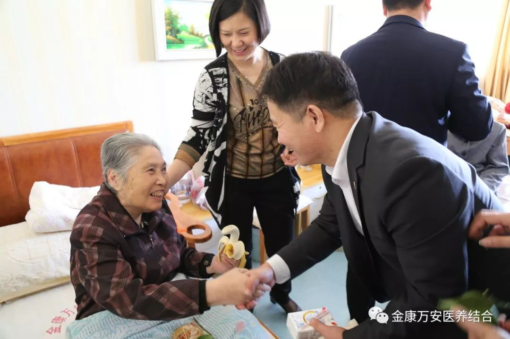
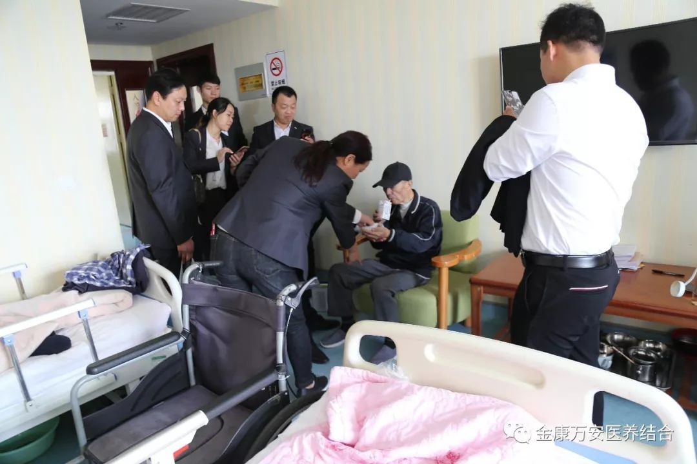
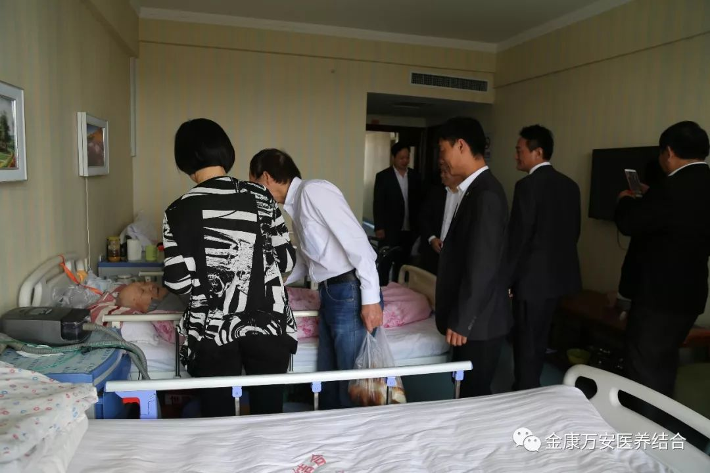
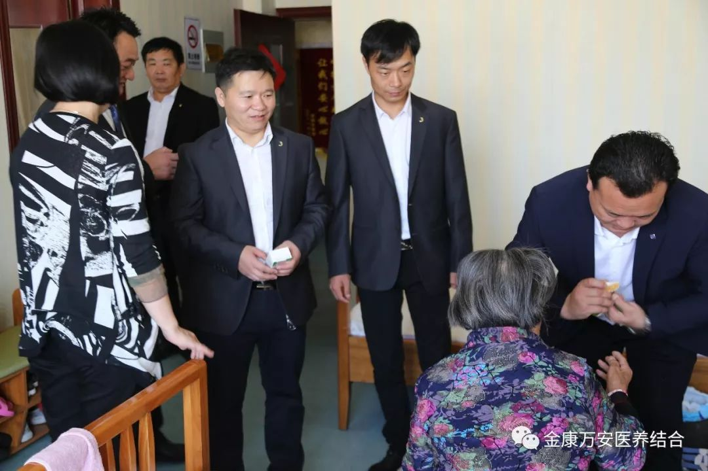
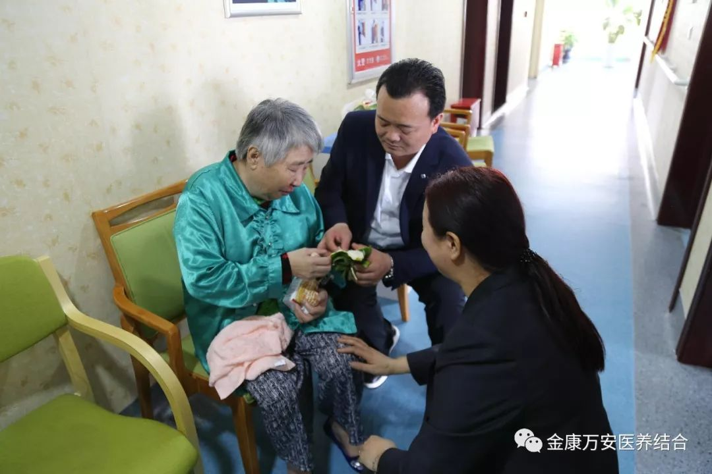
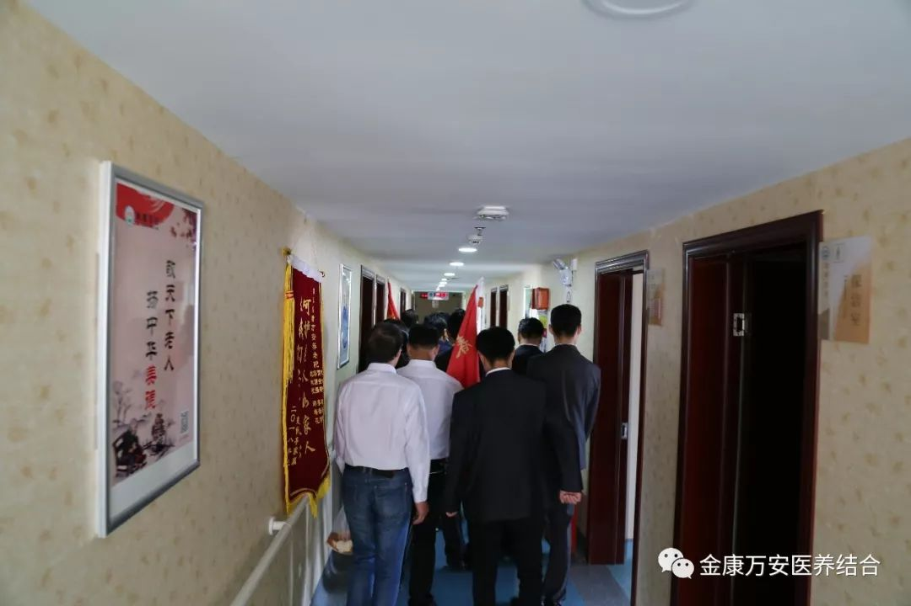
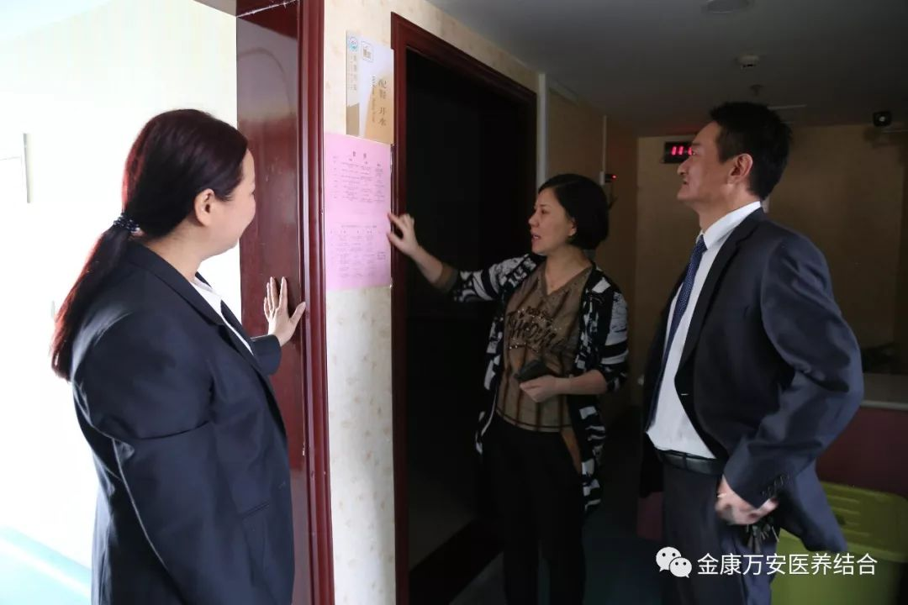

山西亚宝药业爱心人士一行来万安老年公寓慰问老人
人气: "" 时间：2018-09-22
尊老为德，敬老为善，助老为乐，爱老为美！9月22日上午，山西亚宝药业爱心人士一行10余人来到漯河万安老年公寓看望慰问老人。业务院长银令令接待了这些爱心人士，对山西亚宝药业一行人员的善德善行表示敬意和感谢，并陪同他们去房间看望老人。





爱心人士到老人房间慰问老人
随后，在业务院长银令令的陪同下，爱心人士到房间看望慰问老人，与老人唠家常，详细询问老人们的日常起居及身体状况。看到万安老年公寓环境温馨舒适、设备齐全，护理人员服务周到细致，老人们在这里生活得那么快乐，爱心人士一行无不被这样“老有所医，老有所养”的温暖大家庭感动。


在参观中银院长讲到，我们在建设中，所有的设备及用品都是遵循适老化的原则，以便更好地服务老人。并且在今后我们将继续以“孝慈仁善”的企业文化引领员工，以“医养结合”的新型养老模式为特色开展养老服务，以“保障安全为前提，让老人舒心，让儿女放心，以“感动服务”为宗旨赢得市场，以“精益求精”的工匠理念，贯穿于各个专业和岗位，以“标准流程”为基础，实施科学规范的管理。做到“为天下儿女尽孝，为党和政府分忧”，从而弘扬全社会尊老、爱老风尚。